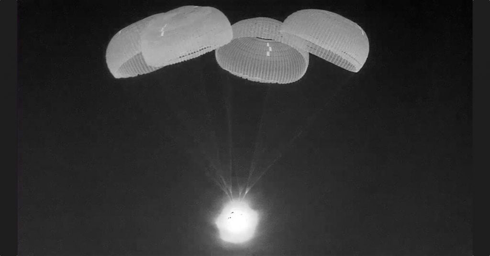
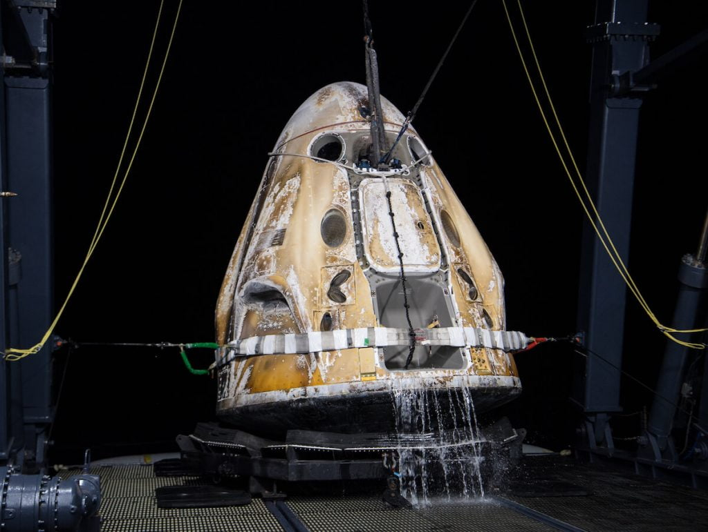

အခု ခရီးစဉ်ဟာ SpaceX Crew Dragon ရဲ့ လူ လိုက်ပါတဲ့ ခရီးစဉ် တွေ အနက် တတိယ မြောက် ခရီးစဉ် ဖြစ်ပါတယ်။ အခု အာကာသ ယာဉ်ကို Endurance လို့ အမည် ပေးထား ကြပါတယ်။
ဒီ ခရီးစဉ်မှာ အပြည်ပြည် ဆိုင်ရာ အာကာသ စခန်း ပေါ်မှာ ၆ လ ကြာအောင် နေထိုင် ခဲ့တဲ့ နာဆာက အာကာသ ယာဉ်မှူး ၃ ဦး နဲ့ ဥရောပ အာကာသ အေဂျင်စီ မှ အာကာသ ယာဉ်မှူး တစ်ဦး တို့ ပြန်လည် လိုက်ပါ လာကြတာ ဖြစ်ပါတယ်။
SpaceX Crew Dragon အာကာသ ယာဉ် ဟာ အမေရိကန် ပြည်ထောင်စု ဖလောရီဒါ ပြည်နယ် ရဲ့ ကမ်းလွန် မက္ကစီကို ပင်လယ်ကွေ့ ထဲကို မေလ ၆ ရက် အမေရိကန် အရှေ့တိုင်း စံတော်ချိန် (Eastern Standard Time) မနက် ၁၂ နာရီ ၄၃ မိနစ် တိတိ အချိန်မှာ အောင်မြင်စွာ ဆင်းသက် နိုင်ခဲ့ ပါတယ်။

ဒီ ယာဉ် ခရီးစဉ်ရဲ့ ဦးစီး ယာဉ်မှူး ဖြစ်တဲ့ ရာဂျာ ချာရီ က “ကျွန်တော်တို့ အိမ်ပြန်ခွင့် ရတဲ့ အတွက် ဝမ်းသာ ပျော်ရွှင် ရပါတယ်။ Endurance (Dragon Crew) အာကာသ ယာဉ်ကို အသုံးပြုခွင့် ရတဲ့ အတွက်လဲ ကျေးဇူး တင်ပါတယ်” လို့ ရေပြင်ပေါ် ဆင်းသက် ပြီးပြီးချင်း မှာ ပြောကြား ခဲ့ပါတယ်။
“အလွန်ကောင်းတဲ့ ခရီးစဉ်ပါ” လို့လဲ သူက ပြောပါတယ်။
အာကာသ ယာဉ် ပြန်လည် ဆင်းသက် အပြီး ပြုလုပ်ခဲ့တဲ့ သတင်းစာ ရှင်းလင်းပွဲမှာ SpaceX စီမံကိန်း ရဲ့ ကြံ့ခိုင်မှုနဲ့ စိတ်ချရမှု ဆိုင်ရာ ဒုတိယ ဥက္ကဌ ဖြစ်သူ ဘီလ် ဂါစတိုင်မေယာ (Bill Gerstenmaier) က ပြောကြား ရာမှာ ပြီးခဲ့တဲ့ မေလ ၅ ရက်နေ့က အာကာသယာဉ် အပြည်ပြည် ဆိုင်ရာ အာကာသ စခန်းနဲ့ ချိတ်ဆက်တဲ့ အချိန်မှာ အပိုင်းအစ အသေးလေး တစ်ခု လွင့်ထွက် သွားတာကို ယာဉ် အဖွဲ့သား တွေက သတိ ပြုမိတယ် ဆိုတာကို ပြောကြား ခဲ့ပါတယ်။ ဓါတ်ပုံတွေကို အသေးစိတ် စစ်ဆေး ကြည့်ရှုတဲ့ အခါမှာတော့ ဒီ အပိုင်းအစ လေးဟာ အာကာသယာဉ် လွှတ်တစ်စဉ်က လွှတ်တင်တဲ့ ဒုံးပျံ ဖြစ်တဲ့ Falcon 9 ဒုံးပျံနဲ့ ချိတ်ဆက်တဲ့ အဆက်မှာ တပ်ဆင်ထားတဲ့ မူလီ ဖြစ်တယ် ဆိုတာကို တွေ့ရှိ ခဲ့ရ ကြောင်း၊ ဒါပေမယ့် ဒီ အပိုင်း အစ ဟာ အာကာသယာဉ် ကို သော်လည်းကောင်း၊ အပြည်ပြည် ဆိုင်ရာ အာကာသ စခန်းကို သော်လည်းကောင်း ဘာ အန္တရာယ်မှ ပြုမှာ မဟုတ်ကြောင်း ပြောကြား ခဲ့ပါတယ်။

“ဒီကိစ္စ မျိုးက ကျွန်တော်တို့ မဖြစ်လိုတဲ့ အဖြစ်အပျက် မျိုးပါ။ ဒါမျိုး နောက်မဖြစ်အောင် ကျွန်တော်တို့ ဂရု စိုက်ပါမယ်။ ဒီဇိုင်း ပြောင်းဖို့ လိုမလို စုံစမ်း စစ်ဆေး သွားမှာ ဖြစ်ပါတယ်” လို့ သူက သတင်းထောက် တွေကို ရှင်းပြ ခဲ့ပါတယ်။
လက်ရှိ အချိန်မှာ အပြည်ပြည် ဆိုင်ရာ အာကာသ စခန်းပေါ်မှာ SpaceX Crew-4 အဖွဲ့သား ၄ ဦး တာဝန် ထမ်းဆောင်လျက် ရှိကြပါတယ်။ သူတို့ဟာ လာမယ့် စက်တင်ဘာမှာ တက်လာမယ့် Crew-5 အဖွဲ့သားများ လာတဲ့ အထိ ဆက်လက် တာဝန် ထမ်းဆောင် သွားမယ်လို့ သိရပါတယ်။
Reference: NASA